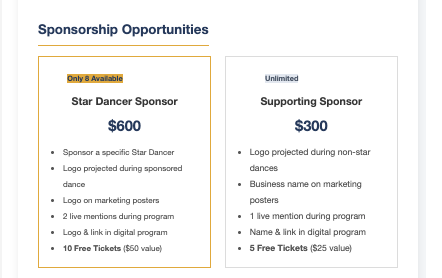
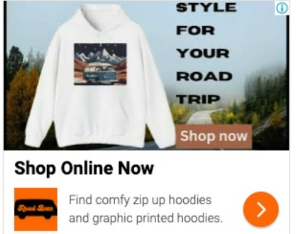
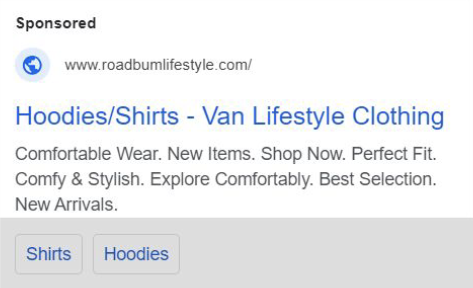
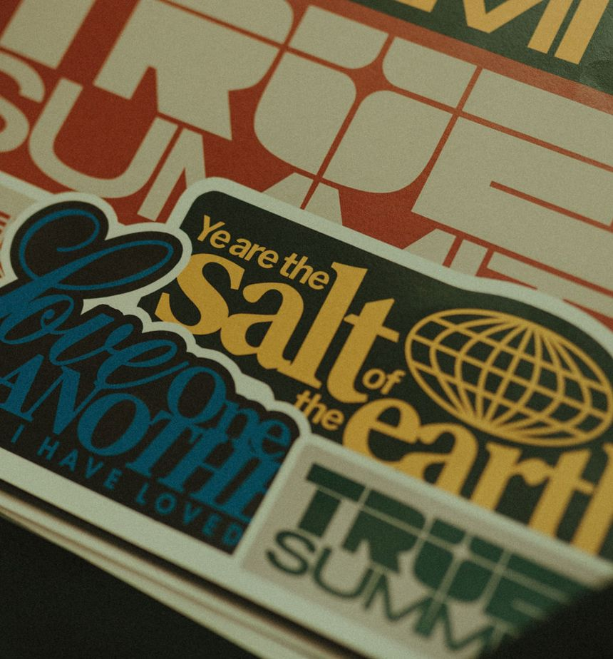

Case studies
Each study follows the same path: context, challenge, my role, method, evidence, results, and what the work shows. Where a result belongs to a team or organization, or is a model rather than an outcome, it is labeled that way.
Nonprofit outreach
Opening business conversations for local students.
My outreach
My email campaigns
Not attributed to me alone
Context
Madison Education Foundation holds an annual fundraising event, and local business sponsorship is part of how it raises money for students and educators. From September to December 2026 I worked on outreach to those businesses.
Challenge
Local business owners are busy, and one email is easy to miss. Early outreach drew limited responses, so the question became how to give a business more than one way to hear about the opportunity and act on it.
My role
I contacted 150+ local businesses and ran email campaigns to business owners. I was one contributor to a wider organizational effort.
Strategy
I paired email with other touchpoints so follow-up did not depend on the inbox. The message centered on local student impact and clear sponsorship options.
- Phone calls
- Social media
- In-person visits
Evidence
Position timeline
The outreach window and the event it supported. The four channels above were used within this period; their order and timing are not shown.
- September 2026Position begins
- November 7Event date
- December 2026Position ends

Results
- My work: 150+ businesses contacted and a 35.6% open rate on email campaigns.
- Organization: the foundation’s overall fundraising result was $9,950.
What it shows
Persistence across channels, clear B2B communication, and the habit of separating individual results from team results.
Attribution notes
The $9,950 is an organization-wide result. This page does not claim that outreach alone produced it. The 35.6% figure measures email opens only, not replies or sponsorships.
Paid media
Improving click-through while lowering cost.
Context
RoadBum is an apparel brand for road-trip and van-life customers. Its Google Ads campaign ran across search, display, and YouTube formats.
Opportunity
Digital ads can earn attention efficiently when they are watched and adjusted. The opportunity was to raise engagement while keeping the cost of each click in check.
My role
I analyzed campaign performance and made the optimization changes, tracking click-through rate and cost per click across formats.
Methodology
- Keyword refinement
- Negative keywords to filter out less relevant searches
- Ad-copy optimization
- Bid-strategy testing
- Ongoing campaign adjustments
Evidence
Before and after
The two efficiency metrics the work focused on. Click-through rate rose 6.6 percentage points; cost per click fell about 12%.
Campaign window
About seven weeks of testing and adjustment.
- October 28, 2024Campaign starts
- December 18, 2024Campaign period ends


Results
- CTR improved from 4% to 10.6%.
- CPC decreased from $0.51 to $0.45.
- 3,600+ display impressions.
- 2,200 YouTube views at approximately $0.01 per view.
What it shows
Reading engagement and cost together, testing changes one lever at a time, and judging a campaign by efficiency rather than reach alone.
Notes
These are campaign-level click and cost metrics. They do not describe sales or revenue, and no revenue claim is made.
Market research
Finding the opportunity in the audience.
Context
The festival wanted a clearer picture of who attends, how far they travel, what they spend, and where to reach them.
Opportunity
Survey data could show whether some visitors were both willing to travel far and likely to spend more, and which channels would reach them.
My role
I analyzed the 337 survey responses, tested differences between groups, and turned the findings into recommendations and a revenue model.
Methodology
Research to recommendation
The workflow, in order.
- Survey337 attendee responses
- TestANOVA and chi-square analysis
- SegmentDedicated attendees and $500+ spenders
- InterpretTravel willingness and media habits
- RecommendActions plus a modeled opportunity
Evidence
Dedicated attendees: how long they would drive
40% would drive more than four hours: 30% for 4–6 hours and 10% for 7 or more. The remaining 60% would drive less than four hours.
High-spending attendees ($500+): how long they would drive
93.4% would drive more than four hours, split evenly between 4–6 hours and 7 or more.
Light segment: 1–3 hours, 6.7%
Most used media channel among dedicated attendees
Respondents could select more than one channel, so the percentages add to more than 100%. Facebook is the strongest route to this audience.
Results
- 93.4% of high-spending respondents and 40% of dedicated attendees were willing to drive more than four hours.
- Facebook was the most-used channel for dedicated attendees.
- Recommendations: target distant high-spending attendees, explore hotel and motel affiliate partnerships, offer travel-oriented promotions such as luggage tags, and strengthen Facebook communication.
Modeled hotel-affiliate opportunity
A projection, not an outcome. Each step is multiplied into the next.
Assumptions: one commissionable one-night stay per qualifying attendee (8,400 of 21,000), and the 40% rate from dedicated attendees applied to all attendees. The $300 price is an average hotel price in Red Lodge, Montana.
What it shows
Statistical testing used to answer a business question, recommendations tied to specific findings, and a revenue estimate whose assumptions are stated openly.
Notes
$302,400 is a modeled opportunity. It is not realized revenue, a forecast, or a guaranteed outcome, and this page claims no signed partnerships. Responses were analyzed in aggregate; no respondent data is shown.
Campaigns and human resources
Growing a brand while keeping 18 people aligned.
Context
TRUE SUMMIT was a student-led business at BYU–Idaho, built in the Integrated Business Core, selling Christian multilingual-designed clothing to students and faculty. I co-founded it and held two roles.
Challenge
Grow sales through coordinated campaigns while keeping a team of 18 organized, trained, and clear on expectations as people rotated between roles.
My role
Marketing/Campaign Manager. Planned and ran campaigns using sales data, customer feedback, and product-mix analysis, while watching pricing and margin impact. Built the email campaigns.
Chief Human Resources Officer. Led HR systems, schedules, attendance tracking, culture, training support, documentation, performance tracking, rotation transitions, and communication clarity.
Methodology
- Used sales data, customer feedback, and product-mix analysis to plan campaigns.
- Monitored pricing and margin impact alongside revenue.
- Tracked attendance and performance, and documented procedures so rotations ran smoothly.
- Collected employee experience scores.
Evidence
Sales by week
Weekly sales, labeled exactly as in the original sales graph. Week 6 was the highest week.
Email performance
Delivery was near-complete; about a quarter of recipients opened.
Campaign timeline
The business period and its campaign date.
- September 2025Business begins
- November 16, 2025Campaign date
- December 2025Business period ends

Results
- Approximately $14,000 in revenue and a 206% revenue increase.
- Approximately $2,800 per day reported for the campaign.
- Email: 99.3% delivery, 27.4% open rate, 5.9% click rate.
- Team: employee experience scores averaged 4.4–4.5 out of 5, and attendance was 93%.
What it shows
Growth and team health depend on each other. Campaign analysis, clear systems, and steady communication let an 18-person team execute consistently.
Notes
Revenue and campaign figures are reported outcomes. The $14,000 total and the ~$2,800/day result are reported separately from the weekly chart, whose values are shown as labeled in the original graph. Employee scores and attendance describe the team, not sales.